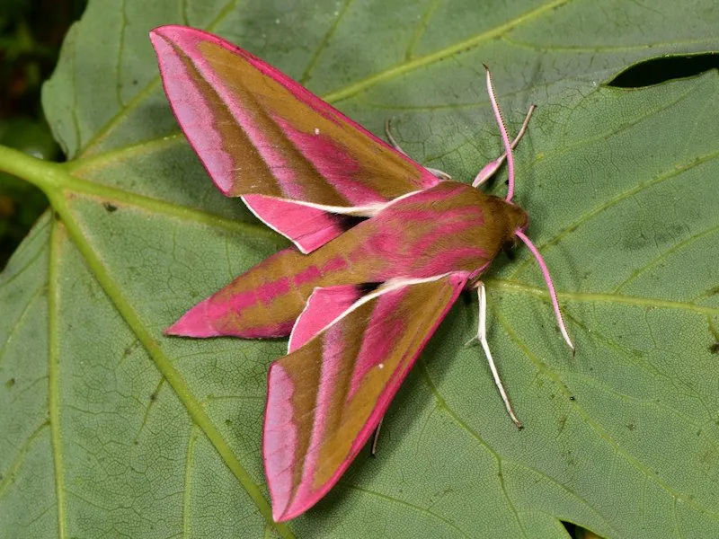

昆虫 · 动物界
红天蛾 Deilephila elpenor

翅面粉红与橄榄绿相间的一种大型天蛾，黄昏时悬停吸蜜，幼虫取食柳兰和凤仙花，广布欧亚大陆的温带地区。
- 分类
- 门节肢动物门纲昆虫纲目鳞翅目科天蛾科属红天蛾属
- 栖息环境
- 林缘、花园、河岸与湿地，柳兰和凤仙花等植物附近
- 地理分布
- 欧洲和亚洲温带地区，包括中国北方
- 保护级别
- 暂无评估
物种志
红天蛾翅展约 6–7 cm，体粗壮呈流线型，前翅橄榄绿至黄褐色，翅脉和斑纹呈粉红色，后翅粉红色带黑色边缘，身体也有粉红色环带，配色非常鲜艳。触角羽状，复眼大。
它生活在林缘、花园、河岸和湿地，成虫在黄昏和夜间活动，靠长喙悬停吸食花蜜，飞行时像一只小蜂鸟。雌蝶把卵产在柳兰、凤仙花、月见草等植物的叶片上，幼虫体色褐色或绿色，体侧有眼斑，受惊时会把头缩起，模仿蛇头。红天蛾广布欧洲和亚洲温带地区，一年发生一代或两代，以蛹越冬，是夜间访花昆虫中的明星，也是花园里容易观察到的天蛾。它的蛹在落叶层或浅土中越冬，春季羽化，成虫多在夜间访花。
形态与习性
- 食性成虫吸食花蜜；幼虫取食柳兰、凤仙花等叶片
- 翅展约 6–7 cm
- 识别前翅橄榄绿带粉红纹，后翅粉红带黑边
- 习性黄昏悬停吸蜜，飞行像小蜂鸟
- 分布欧洲和亚洲温带地区
趣味知识
- 红天蛾的翅膀是粉红和橄榄绿的撞色搭配，非常醒目。
- 它黄昏时悬停在花前吸蜜，看起来像一只小蜂鸟。
- 幼虫受惊时会把头缩起来，模仿蛇头吓退天敌。